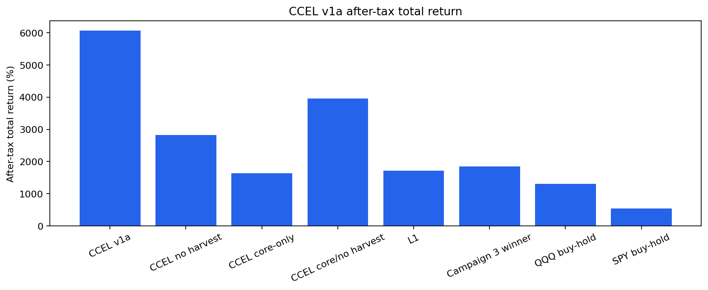
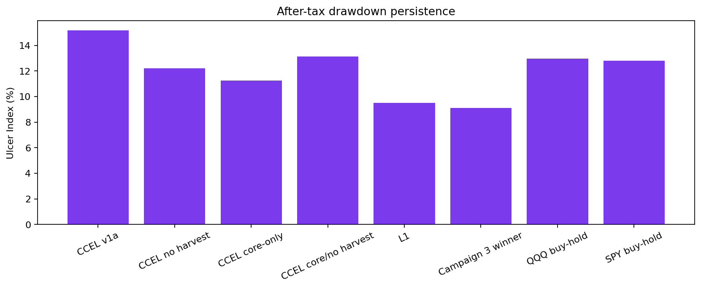
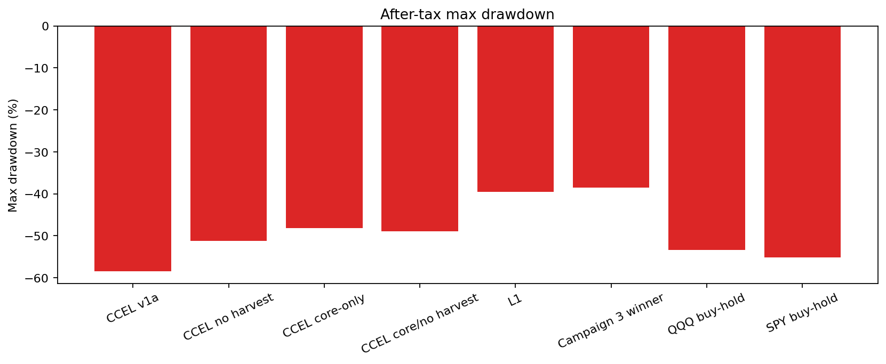
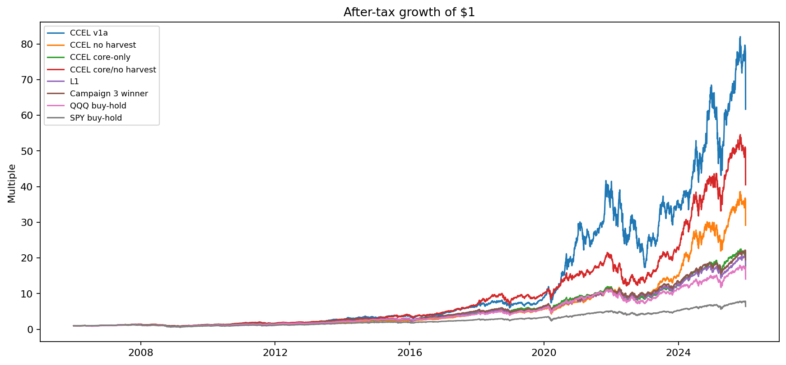

Generated 2026-06-13T21:43:48.015772+00:00 at git SHA 56351e9. Window: 2006-01-01 to 2025-12-31. OOS starts 2024-01-01.
| Arm | Strategy Used | Tax / Exit Rule |
|---|---|---|
| CCEL v1a | Buy-only deployment into the current campaign basket; equal-weight at entry; winners drift and are not trimmed. | FIFO lots, ST/LT rates 32%/20%, wash-sale loss deferral, monthly harvesting, probation exits. Harvest proceeds use exposure-neutral replacement by default. |
| CCEL no harvest | Same as CCEL v1a, but the explicit loss-harvesting rule is disabled. | Taxes still apply to any probation/fundamental exits. This isolates harvest timing from the rest of the management layer. |
| CCEL core-only | All positions are treated as core; probation exits are disabled while exposure-neutral harvesting remains active. | Tests whether probation logic adds value beyond core compounding plus harvests. |
| CCEL core/no harvest | Core-only hold logic with no explicit harvesting. | Lowest-turnover CCEL proxy ablation. |
| L1 | Campaign 2 L1 volatility-targeted equal-weight basket. | Post-processed through the same FIFO/wash/annual-tax research model. |
| Campaign 3 winner | Best L1 candidate from Campaign 3 where available: L1_tv15_min40_band40. | Post-processed through the same research tax model. |
| QQQ buy-hold | QQQ buy-and-hold benchmark. | Terminal liquidation tax applied at the end of the window. |
| SPY buy-hold | SPY buy-and-hold benchmark. | Terminal liquidation tax applied at the end of the window. |
| Arm | Terminal Wealth | Total Return | CAGR | Vol | Sharpe | Sortino | Max DD | Calmar | Ulcer | Turnover | Costs | Trades |
|---|---|---|---|---|---|---|---|---|---|---|---|---|
| CCEL v1a | 6257361.635 | 6069.75% | 22.94% | 29.17% | 0.855 | 1.089 | -58.48% | 0.392 | 15.18% | 0.644 | 642.893 | 1660.000 |
| CCEL no harvest | 2958709.646 | 2817.28% | 18.41% | 22.50% | 0.865 | 1.057 | -51.16% | 0.360 | 12.21% | 0.074 | 73.925 | 51.000 |
| CCEL core-only | 1761605.095 | 1636.94% | 15.38% | 20.31% | 0.807 | 0.974 | -48.12% | 0.320 | 11.23% | 0.481 | 480.130 | 1804.000 |
| CCEL core/no harvest | 4110082.553 | 3952.54% | 20.38% | 24.03% | 0.893 | 1.117 | -48.99% | 0.416 | 13.14% | 0.050 | 49.975 | 28.000 |
| L1 | 1815720.520 | 1715.72% | 15.63% | 18.40% | 0.882 | 1.080 | -39.48% | 0.396 | 9.51% | 1.578 | 9517.301 | 12245.000 |
| Campaign 3 winner | 1951163.929 | 1851.16% | 16.05% | 17.93% | 0.920 | 1.137 | -38.51% | 0.417 | 9.12% | 1.341 | 8214.765 | 8632.000 |
| QQQ buy-hold | 1431635.516 | 1309.47% | 14.17% | 22.40% | 0.705 | 0.873 | -53.40% | 0.265 | 12.95% | 0.050 | 49.968 | 1.000 |
| SPY buy-hold | 650603.011 | 543.18% | 9.77% | 19.80% | 0.571 | 0.667 | -55.16% | 0.177 | 12.81% | 0.050 | 49.945 | 1.000 |
| Comparison | Terminal Wealth Delta | CAGR Delta | Ulcer Delta | Interpretation |
|---|---|---|---|---|
| Exposure-neutral harvesting | 3298651.989 | 4.53% | 2.97% | Positive means the harvest rule plus wash-safe replacement helped; this is not standalone tax alpha. |
| Probation sleeve | 4495756.540 | 7.56% | 3.95% | Positive means probation logic helped. |
| Core exposure-neutral harvest | -2348477.458 | -5.00% | -1.90% | Positive means core-level harvest replacement helped without momentum-ranked new-name rotation. |
| Year | CCEL v1a | CCEL no harvest | CCEL core-only | CCEL core/no harvest | L1 | Campaign 3 winner | QQQ buy-hold | SPY buy-hold |
|---|---|---|---|---|---|---|---|---|
| 2006 | 9.67% | 10.87% | 10.22% | 11.67% | 13.00% | 12.92% | 4.81% | 13.83% |
| 2007 | 22.94% | 23.02% | 24.26% | 27.13% | 19.38% | 19.16% | 19.03% | 5.14% |
| 2008 | -32.76% | -36.44% | -33.38% | -35.97% | -25.94% | -25.80% | -41.72% | -36.78% |
| 2009 | 28.97% | 27.50% | 29.03% | 40.46% | 31.42% | 32.73% | 54.67% | 26.33% |
| 2010 | 25.94% | 18.15% | 24.92% | 33.37% | 16.84% | 20.92% | 20.14% | 15.05% |
| 2011 | 3.66% | 10.02% | 4.91% | -1.28% | 0.28% | 1.07% | 3.48% | 1.89% |
| 2012 | 14.44% | 12.90% | 14.32% | 16.87% | 9.24% | 10.75% | 18.11% | 15.98% |
| 2013 | 60.09% | 27.46% | 32.53% | 43.56% | 49.26% | 47.98% | 36.63% | 32.29% |
| 2014 | 19.98% | 13.02% | 8.48% | 7.09% | 8.78% | 8.90% | 19.18% | 13.46% |
| 2015 | 12.95% | 6.54% | 13.78% | 30.93% | 3.00% | 5.22% | 9.44% | 1.23% |
| 2016 | 15.10% | 24.44% | 15.36% | 18.16% | 27.49% | 26.48% | 7.10% | 11.99% |
| 2017 | 44.78% | 38.12% | 35.01% | 44.78% | 35.14% | 34.28% | 32.66% | 21.70% |
| 2018 | 3.78% | -0.81% | 8.80% | 11.56% | -0.18% | -0.90% | -0.13% | -4.57% |
| 2019 | 35.27% | 33.64% | 30.59% | 32.71% | 30.31% | 27.66% | 38.96% | 31.22% |
| 2020 | 192.59% | 36.29% | 43.28% | 55.81% | 34.79% | 34.31% | 48.40% | 18.33% |
| 2021 | 47.19% | 51.75% | 28.27% | 31.96% | 31.61% | 30.73% | 27.42% | 28.72% |
| 2022 | -51.72% | -22.38% | -26.71% | -34.84% | -15.82% | -14.64% | -32.58% | -18.17% |
| 2023 | 91.56% | 65.93% | 44.22% | 70.56% | 36.02% | 38.39% | 54.85% | 26.17% |
| 2024 | 79.15% | 85.38% | 45.77% | 79.19% | 31.15% | 31.07% | 25.58% | 24.88% |
| 2025 | -2.47% | 4.16% | -3.91% | -1.16% | 8.23% | 9.84% | -2.01% | -2.84% |




| Arm | Window | Return | Max DD | Exposure | Trades |
|---|---|---|---|---|---|
| CCEL v1a | 2004-2006 Normalization | 9.67% | -10.02% | 99.90% | 296.000 |
| CCEL v1a | 2007-2009 Global Financial Crisis | -45.32% | -47.07% | 99.88% | 636.000 |
| CCEL v1a | 2008 Lehman Shock | -30.27% | -33.71% | 99.81% | 197.000 |
| CCEL v1a | 2011 Eurozone / US Debt Shock | -16.97% | -18.11% | 99.99% | 39.000 |
| CCEL v1a | 2018 Q4 Risk-Off | -26.04% | -26.04% | 100.00% | 6.000 |
| CCEL v1a | 2020 COVID Crash | -36.14% | -38.21% | 100.00% | 0.000 |
| CCEL v1a | 2022 Inflation / Rate Bear | -43.47% | -43.54% | 100.00% | 5.000 |
| CCEL v1a | 2023 Recovery | 103.98% | -21.66% | 100.00% | 0.000 |
| CCEL v1a | 2025 Tariff / Volatility Shock | 0.01% | -15.96% | 100.00% | 0.000 |
| CCEL no harvest | 2004-2006 Normalization | 10.87% | -11.01% | 99.99% | 45.000 |
| CCEL no harvest | 2007-2009 Global Financial Crisis | -49.56% | -51.16% | 99.99% | 0.000 |
| CCEL no harvest | 2008 Lehman Shock | -32.97% | -35.99% | 99.99% | 0.000 |
| CCEL no harvest | 2011 Eurozone / US Debt Shock | -12.73% | -14.79% | 100.00% | 0.000 |
| CCEL no harvest | 2018 Q4 Risk-Off | -23.68% | -23.68% | 100.00% | 0.000 |
| CCEL no harvest | 2020 COVID Crash | -31.53% | -31.53% | 100.00% | 0.000 |
| CCEL no harvest | 2022 Inflation / Rate Bear | -30.23% | -30.23% | 100.00% | 0.000 |
| CCEL no harvest | 2023 Recovery | 67.76% | -11.10% | 100.00% | 0.000 |
| CCEL no harvest | 2025 Tariff / Volatility Shock | -2.29% | -11.96% | 100.00% | 0.000 |
| CCEL core-only | 2004-2006 Normalization | 10.22% | -10.02% | 99.87% | 399.000 |
| CCEL core-only | 2007-2009 Global Financial Crisis | -46.40% | -48.12% | 99.82% | 712.000 |
| CCEL core-only | 2008 Lehman Shock | -31.52% | -35.03% | 99.78% | 125.000 |
| CCEL core-only | 2011 Eurozone / US Debt Shock | -14.51% | -15.60% | 100.00% | 0.000 |
| CCEL core-only | 2018 Q4 Risk-Off | -24.14% | -24.14% | 100.00% | 7.000 |
| CCEL core-only | 2020 COVID Crash | -24.50% | -25.58% | 100.00% | 0.000 |
| CCEL core-only | 2022 Inflation / Rate Bear | -30.80% | -31.88% | 99.99% | 1.000 |
| CCEL core-only | 2023 Recovery | 45.42% | -9.01% | 99.99% | 0.000 |
| CCEL core-only | 2025 Tariff / Volatility Shock | 1.89% | -11.59% | 99.99% | 0.000 |
| CCEL core/no harvest | 2004-2006 Normalization | 11.67% | -10.49% | 100.00% | 28.000 |
| CCEL core/no harvest | 2007-2009 Global Financial Crisis | -45.86% | -48.99% | 100.00% | 0.000 |
| CCEL core/no harvest | 2008 Lehman Shock | -34.69% | -38.06% | 100.00% | 0.000 |
| CCEL core/no harvest | 2011 Eurozone / US Debt Shock | -19.99% | -21.00% | 100.00% | 0.000 |
| CCEL core/no harvest | 2018 Q4 Risk-Off | -31.32% | -31.32% | 100.00% | 0.000 |
| CCEL core/no harvest | 2020 COVID Crash | -21.31% | -25.89% | 100.00% | 0.000 |
| CCEL core/no harvest | 2022 Inflation / Rate Bear | -40.42% | -41.34% | 100.00% | 0.000 |
| CCEL core/no harvest | 2023 Recovery | 72.12% | -11.45% | 100.00% | 0.000 |
| CCEL core/no harvest | 2025 Tariff / Volatility Shock | 3.15% | -11.93% | 100.00% | 0.000 |
| L1 | 2004-2006 Normalization | 13.00% | -9.26% | 98.14% | 386.000 |
| L1 | 2007-2009 Global Financial Crisis | -31.50% | -32.67% | 75.66% | 1435.000 |
| L1 | 2008 Lehman Shock | -17.15% | -20.11% | 48.65% | 292.000 |
| L1 | 2011 Eurozone / US Debt Shock | -14.72% | -15.61% | 71.61% | 230.000 |
| L1 | 2018 Q4 Risk-Off | -15.93% | -15.93% | 86.93% | 116.000 |
| L1 | 2020 COVID Crash | -21.91% | -21.91% | 60.25% | 206.000 |
| L1 | 2022 Inflation / Rate Bear | -16.78% | -17.87% | 80.45% | 620.000 |
| L1 | 2023 Recovery | 34.43% | -9.17% | 97.54% | 463.000 |
| L1 | 2025 Tariff / Volatility Shock | -4.99% | -10.71% | 56.48% | 179.000 |
| Campaign 3 winner | 2004-2006 Normalization | 12.92% | -9.26% | 98.02% | 311.000 |
| Campaign 3 winner | 2007-2009 Global Financial Crisis | -31.47% | -32.62% | 76.08% | 758.000 |
| Campaign 3 winner | 2008 Lehman Shock | -17.80% | -20.75% | 48.98% | 110.000 |
| Campaign 3 winner | 2011 Eurozone / US Debt Shock | -13.42% | -14.41% | 72.47% | 144.000 |
| Campaign 3 winner | 2018 Q4 Risk-Off | -17.06% | -17.06% | 86.88% | 84.000 |
| Campaign 3 winner | 2020 COVID Crash | -21.30% | -21.30% | 61.66% | 118.000 |
| Campaign 3 winner | 2022 Inflation / Rate Bear | -16.78% | -17.92% | 80.68% | 417.000 |
| Campaign 3 winner | 2023 Recovery | 35.99% | -9.16% | 97.94% | 378.000 |
| Campaign 3 winner | 2025 Tariff / Volatility Shock | -4.74% | -10.43% | 58.40% | 90.000 |
| QQQ buy-hold | 2004-2006 Normalization | 4.81% | -17.26% | 99.99% | 0.000 |
| QQQ buy-hold | 2007-2009 Global Financial Crisis | -51.55% | -53.40% | 99.99% | 0.000 |
| QQQ buy-hold | 2008 Lehman Shock | -39.21% | -40.41% | 99.98% | 0.000 |
| QQQ buy-hold | 2011 Eurozone / US Debt Shock | -12.27% | -16.10% | 99.99% | 0.000 |
| QQQ buy-hold | 2018 Q4 Risk-Off | -22.61% | -22.61% | 100.00% | 0.000 |
| QQQ buy-hold | 2020 COVID Crash | -27.92% | -28.56% | 100.00% | 0.000 |
| QQQ buy-hold | 2022 Inflation / Rate Bear | -34.28% | -34.28% | 100.00% | 0.000 |
| QQQ buy-hold | 2023 Recovery | 55.91% | -10.78% | 100.00% | 0.000 |
| QQQ buy-hold | 2025 Tariff / Volatility Shock | -0.14% | -12.62% | 100.00% | 0.000 |
| SPY buy-hold | 2004-2006 Normalization | 13.83% | -7.59% | 99.94% | 0.000 |
| SPY buy-hold | 2007-2009 Global Financial Crisis | -55.16% | -55.16% | 99.94% | 0.000 |
| SPY buy-hold | 2008 Lehman Shock | -36.79% | -39.19% | 99.93% | 0.000 |
| SPY buy-hold | 2011 Eurozone / US Debt Shock | -16.09% | -17.88% | 99.94% | 0.000 |
| SPY buy-hold | 2018 Q4 Risk-Off | -19.20% | -19.20% | 99.98% | 0.000 |
| SPY buy-hold | 2020 COVID Crash | -33.71% | -33.71% | 99.98% | 0.000 |
| SPY buy-hold | 2022 Inflation / Rate Bear | -24.49% | -24.49% | 99.99% | 0.000 |
| SPY buy-hold | 2023 Recovery | 26.71% | -9.97% | 99.99% | 0.000 |
| SPY buy-hold | 2025 Tariff / Volatility Shock | -1.77% | -12.05% | 99.99% | 0.000 |
Adjusted daily OHLC is used where available; this is a survivorship-biased proxy using the current campaign basket.
| Ticker | Sector | First Date | Last Date | Rows | Starts Late |
|---|---|---|---|---|---|
| AAPL | Information Technology | 2006-01-03 | 2025-12-31 | 5031 | no |
| AEP | Utilities | 2006-01-03 | 2025-12-31 | 5031 | no |
| AMD | Information Technology | 2006-01-03 | 2025-12-31 | 5031 | no |
| AMZN | Consumer Discretionary | 2006-01-03 | 2025-12-31 | 5031 | no |
| BA | Industrials | 2006-01-03 | 2025-12-31 | 5031 | no |
| BRK-B | Financials | 2006-01-03 | 2025-12-31 | 5031 | no |
| CAT | Industrials | 2006-01-03 | 2025-12-31 | 5031 | no |
| COP | Energy | 2006-01-03 | 2025-12-31 | 5031 | no |
| COST | Consumer Staples | 2006-01-03 | 2025-12-31 | 5031 | no |
| CVX | Energy | 2006-01-03 | 2025-12-31 | 5031 | no |
| D | Utilities | 2006-01-03 | 2025-12-31 | 5031 | no |
| FCX | Materials | 2006-01-03 | 2025-12-31 | 5031 | no |
| GE | Industrials | 2006-01-03 | 2025-12-31 | 5031 | no |
| GOOGL | Communication Services | 2006-01-03 | 2025-12-31 | 5031 | no |
| HD | Consumer Discretionary | 2006-01-03 | 2025-12-31 | 5031 | no |
| JNJ | Health Care | 2006-01-03 | 2025-12-31 | 5031 | no |
| JPM | Financials | 2006-01-03 | 2025-12-31 | 5031 | no |
| KO | Consumer Staples | 2006-01-03 | 2025-12-31 | 5031 | no |
| LIN | Materials | 2006-01-03 | 2025-12-31 | 5031 | no |
| LLY | Health Care | 2006-01-03 | 2025-12-31 | 5031 | no |
| META | Communication Services | 2012-05-18 | 2025-12-31 | 3425 | yes |
| NEE | Utilities | 2006-01-03 | 2025-12-31 | 5031 | no |
| NEM | Materials | 2006-01-03 | 2025-12-31 | 5031 | no |
| NFLX | Communication Services | 2006-01-03 | 2025-12-31 | 5031 | no |
| NVDA | Information Technology | 2006-01-03 | 2025-12-31 | 5031 | no |
| TSLA | Consumer Discretionary | 2010-06-29 | 2025-12-31 | 3902 | yes |
| UNH | Health Care | 2006-01-03 | 2025-12-31 | 5031 | no |
| V | Financials | 2008-03-19 | 2025-12-31 | 4476 | yes |
| WMT | Consumer Staples | 2006-01-03 | 2025-12-31 | 5031 | no |
| XOM | Energy | 2006-01-03 | 2025-12-31 | 5031 | no |
python -m src.regime.cli ccel-campaign run --start 2006-01-01 --end 2025-12-31 --oos-start 2024-01-01 --campaign-dir data/campaign/ccel_v1a_2006_2025 --report-dir output/ccel_v1a_2006_2025_report --resume